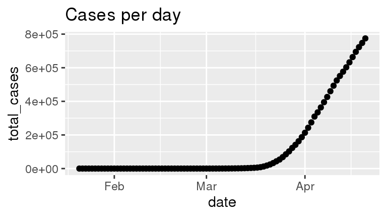
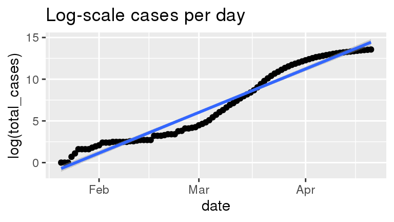
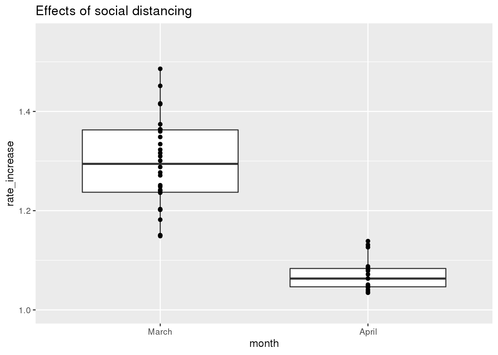
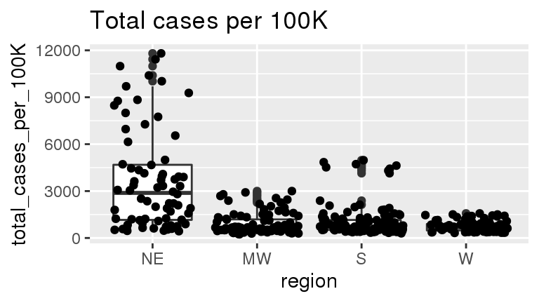
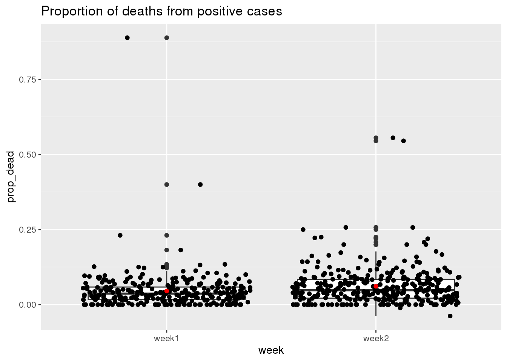

Using data available on GitHub from the NY Times, I am going to investigate the ongoing Covid-19 pandemic in the United States. The variables in the Covid-19 data include the date, the state, the federal id code (fips), the number of cases recorded in the state for the given date, and the number of deaths recorded in the state for the given date. The US population data is from the US Census Bureau website. There are 151 variables in the US Census data – we will use the NAME variable (state variable) and the estimated population in 2019 POPESTIMATE2019.
Does the number of people being infected with covid-19 each day from late January to late April follow an exponential growth curve? To explore this question, we visualize the total number of cases on both a linear scale and a logarithmic scale. Exponential growth is characterized by a linear response to log-transformed data.
dat %>%
group_by(date) %>%
summarise(total_cases = sum(cases)) %>%
ggplot(aes(x = date, y = total_cases)) +
geom_point() +
ggtitle("Cases per day")
dat %>%
group_by(date) %>%
summarise(total_cases = sum(cases)) %>%
ggplot(aes(x = date, y = log(total_cases))) +
geom_point() +
ggtitle("Log-scale cases per day") +
stat_smooth(method = "lm")
Based on the visualizations, there is evidence that the growth in number of covid-19 cases from late January to late April in the United States was exhibiting exponential growth. This can be seen by the steep increase (hockey-stick shape) in the data over time for the non-transformed data and a nearly linear response in the log-transformed data.
The next question is whether the average rate of cases in the US grown slower in April (post social distancing), than March, the month prior (less social distancing). The rate of cases is defined as the ratio of new cases from day to day.
dat_April <-
dat %>% subset(date >= "2020-04-01")
dat_March <-
dat %>% subset(date >= "2020-03-01" & date < "2020-04-01")
rates_April <- dat_April %>%
group_by(date) %>%
summarise(total_cases = sum(cases)) %>%
mutate(rate_increase = total_cases / lag(total_cases),
month = "April")
rates_March <- dat_March %>%
group_by(date) %>%
summarise(total_cases = sum(cases)) %>%
mutate(rate_increase = total_cases / lag(total_cases),
month = "March")
dat_rates <- rbind(rates_March, rates_April)
dat_rates$month <- factor(dat_rates$month, levels = c("March", "April"))Next, we compare the average ratio of cases from day to day for the two time periods
dat_rates %>%
group_by(month) %>%
filter(!is.na(rate_increase)) %>%
summarise(mean_ratio = mean(rate_increase))## # A tibble: 2 x 2
## month mean_ratio
## <fct> <dbl>
## 1 March 1.29
## 2 April 1.07which supports that the daily ratio of the number of cases in March was higher than in April (cases grew faster on a relative scale in March than April). Next we visuallize the data
dat_rates %>%
ggplot(aes(x = month, y = rate_increase)) +
geom_boxplot() +
# scale_color_viridis() +
geom_point(position = position_dodge()) +
ggtitle("Effects of social distancing") +
ylim(c(1.0, 1.55))## Warning: Removed 2 rows containing non-finite values (stat_boxplot).## Warning: Width not defined. Set with `position_dodge(width = ?)`## Warning: Removed 2 rows containing missing values (geom_point).
From the graphic above, the relative increase in the number of cases was high in March (pre social distancing measures) than in April (post social distancing measures). There has been a lot in the news about the \(R_0\) of the virus (the reproduction rate). Based on this very simple visualization of the data, there is some evidence that social distancing measures in the United States in the spring may have reduced the \(R_0\) for covid-19. We cannot conclude definitively that this result is a direct consequence of social distancing from the data alone, however, there is strong epidemiological evidence that social distancing is the primary cause of this decline in case growth rate. Also note, the growth rate is still greater than 1 suggesting the number of cases is still increasing nationwide.
Using the the week April 10-17, has the number of new cases per 100K people (using population data available here) over the this week, is there a difference in infection rate based on spatial region in the US (northwest, south, northeast, etc.).
## state region data from https://stackoverflow.com/questions/46066974/add-column-to-label-u-s-states-by-their-u-s-census-region
dat_NE <- data.frame(
name = c("Connecticut","Maine","Massachusetts","New Hampshire",
"Rhode Island","Vermont","New Jersey","New York",
"Pennsylvania"),
abbr = c("CT","ME","MA","NH","RI","VT","NJ","NY","PA"),
region = "NE"
)
dat_MW <- data.frame(
name = c("Indiana","Illinois","Michigan","Ohio","Wisconsin",
"Iowa","Kansas","Minnesota","Missouri","Nebraska",
"North Dakota","South Dakota"),
abbr = c("IN","IL","MI","OH","WI","IA","KS","MN","MO","NE",
"ND","SD"),
region = "MW"
)
dat_S <- data.frame(
name = c("Delaware","District of Columbia","Florida","Georgia",
"Maryland","North Carolina","South Carolina","Virginia",
"West Virginia","Alabama","Kentucky","Mississippi",
"Tennessee","Arkansas","Louisiana","Oklahoma","Texas"),
abbr = c("DE","DC","FL","GA","MD","NC","SC","VA","WV","AL",
"KY","MS","TN","AR","LA","OK","TX"),
region = "S"
)
dat_W <- data.frame(
name = c("Arizona","Colorado","Idaho","New Mexico","Montana",
"Utah","Nevada","Wyoming","Alaska","California",
"Hawaii","Oregon","Washington"),
abbr = c("AZ","CO","ID","NM","MT","UT","NV","WY","AK","CA",
"HI","OR","WA"),
region = "W"
)
dat_region = rbind(dat_NE, dat_MW, dat_S, dat_W)
## plot of number cases per 100K grouped by state
dat_cases_per_100K_by_region <- dat_merged %>%
left_join(dat_region, by = c("state" = "name")) %>%
subset(date >= "2020-04-10" & date <= "2020-04-17") %>%
group_by(state, date, region) %>%
summarise(total_cases_per_100K = sum(cases_per_100K)) %>%
mutate(new_cases_per_100K = total_cases_per_100K - lag(total_cases_per_100K))
dat_cases_per_100K_by_region %>%
group_by(region) %>%
summarize(
region_mean = mean(total_cases_per_100K),
region_sd = sd(total_cases_per_100K),
count = n()
)## # A tibble: 4 x 4
## region region_mean region_sd count
## <fct> <dbl> <dbl> <int>
## 1 NE 3666. 3176. 72
## 2 MW 918. 677. 96
## 3 S 1070. 1006. 128
## 4 W 761. 350. 88Based on this summary, we see that there was a much higher incidence of covid-19 in the northeast and the south of the United States. This makes intuitive sense as the northeast and south are more densely populated than the midwest and west.
We can also visualize the incidence rates as below:
dat_cases_per_100K_by_region %>%
ggplot(aes (x = region, y = total_cases_per_100K)) +
geom_boxplot() +
geom_point(position = "jitter") +
ggtitle("Total cases per 100K")
Is there a difference in the proportion of deaths per cases for the week April 3-10 vs. April 10-17.
## No summary function supplied, defaulting to `mean_se()
Based on this graphic, it does appear that the average proportion of positive cases resulting in death is higher in the week of April 10-17 compared to April 3-10.
TBD